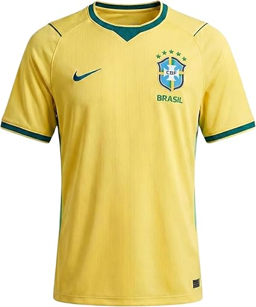
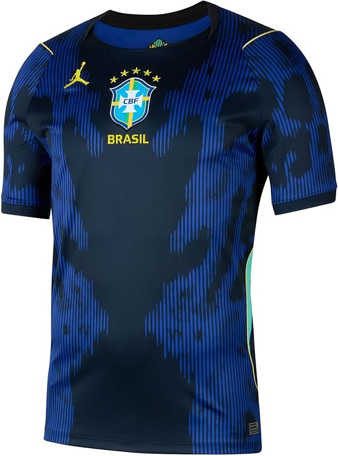
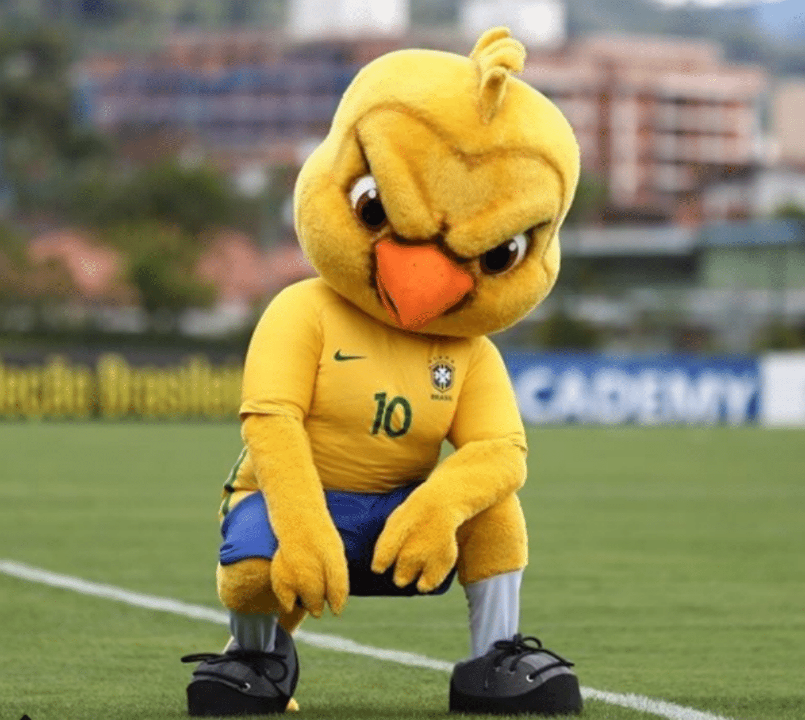

Seleção Brasileira
CBF — Confederação Brasileira de Futebol

Letra do Hino Nacional
Ouviram do Ipiranga às margens plácidas
De um povo heroico o brado retumbante,
E o sol da Liberdade, em raios fúlgidos,
Brilhou no céu da Pátria nesse instante.
Se o penhor dessa igualdade
Conseguimos conquistar com braço forte,
Em teu seio, ó Liberdade,
Desafia o nosso peito a própria morte!
Ó Pátria amada, Idolatrada, Salve! Salve!
Brasil, um sonho intenso, um raio vívido
De amor e de esperança à terra desce,
Se em teu formoso céu, risonho e límpido,
A imagem do Cruzeiro resplandece.
Gigante pela própria natureza,
És belo, és forte, impávido colosso,
E o teu futuro espelha essa grandeza.
Terra adorada,
Entre outras mil,
És tu, Brasil,
Ó Pátria amada!
Dos filhos deste solo és mãe gentil,
Pátria amada, Brasil!
Deitado eternamente em berço esplêndido,
Ao som do mar e à luz do céu profundo,
Fulguras, ó Brasil, florão da América,
Iluminado ao sol do Novo Mundo!
Do que a terra mais garrida
Teus risonhos, lindos campos têm mais flores;
"Nossos bosques têm mais vida",
"Nossa vida" no teu seio "mais amores."
Ó Pátria amada, Idolatrada, Salve! Salve!
Brasil, de amor eterno seja símbolo
O lábaro que ostentas estrelado,
E diga o verde-louro dessa flâmula
— "Paz no futuro e glória no passado."
Mas, se ergues da justiça a clava forte,
Verás que um filho teu não foge à luta,
Nem teme, quem te adora, a própria morte.
Terra adorada,
Entre outras mil,
És tu, Brasil,
Ó Pátria amada!
Dos filhos deste solo és mãe gentil,
Pátria amada, Brasil!
Uniformes Oficiais

Camisa Titular

Camisa Reserva

Mascote: Canarinho
O Canarinho é o mascote símbolo da Seleção Brasileira, um canário com as cores verde e amarela que representa a alegria e paixão do povo brasileiro pelo futebol.
História da Seleção
🌱 Fundação (1914)
A Seleção Brasileira foi fundada em 1914 e disputou seu primeiro jogo oficial contra a Exeter City FC da Inglaterra.
⭐ Era Pelé (1958–1970)
Com Pelé, o Brasil conquistou 3 títulos mundiais: 1958 (Suécia), 1962 (Chile) e 1970 (México). A seleção de 1970 é considerada a melhor de todos os tempos.
🏆 Tetra e Penta
O Brasil conquistou o Tetracampeonato em 1994 (EUA) com Romário e o Pentacampeonato em 2002 (Japão/Coreia) com Ronaldo Fenômeno.
🎯 Busca pelo Hexa
Desde 2002, o Brasil busca o sexto título. A Copa de 2026 representa uma nova oportunidade de conquistar o tão sonhado Hexacampeonato.
5
Títulos Conquistados
1958, 1962, 1970, 1994, 2002
22
Participações em Copas
Única seleção presente em todas as edições
Curiosidades Importantes
Única nação invicta
O Brasil é o único país que participou de todas as edições da Copa do Mundo.
Maior campeão
Com 5 títulos, o Brasil é o maior vencedor da Copa do Mundo.
A camisa amarela
Adotada em 1954 após concurso popular, substituindo o branco usado em 1950.